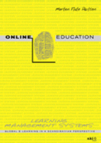

|  |
| About IR |
| Editors |
| Author instructions |
| Copyright |
| Author index |
| Subject index |
| Search |
| Reviews |
| Register |
| Home |
Paulsen, Morten Flate. Online education and learning management systems: global e-learning in a Scandinavian perspective. Oslo: NKI Gorlaget, 2003. 337 pp. ISBN 82 562 5894 2 (Printed version); €58.00 ISBN 82 562 6048-3 (PDF version); ISBN 82 562 6049-1 (Microsoft Reader version) €43.00
The movement towards online education is a natural transition for educational institutions of the 21st century. Online education is perceived by many instructors as innovation that has considerable potential for enhancing teaching and learning, promoting lifelong learning and reaching to non-traditional learners. However, the quality of online delivery is often subject to scepticism and criticism as well as economic success and sustainability of online courses. The literature on online delivery in the field of education has flourished since the early 1990s and there are many publications of varying quality. However, the majority of publications have come from the English-speaking countries, especially from the United States, Australia and the United Kingdom. References to online education initiatives in Europe in general and in the Nordic countries in particularly, however, are quite fragmented. Many initiatives and developments in the Nordic countries have been, for example, documented in local languages, but not in English.
A Norwegian scholar, Morten Flate Paulsen, who has been an enthusiastic proponent of online education since the mid-1980s, analyses in his recent book the emerging phenomenon of online education and provides a comprehensive overview of various aspects of online teaching and learning. The book is based on his doctoral thesis, "Teaching techniques for computer-mediated communication", on his long experiences from developing and teaching online courses at the NKI Internet College in Norway, and on research and experiences from many international projects. Dr. Erwin Wagner, former President of the European Distance and e-Learning Network (EDEN), characterizes the book in the forewords as interesting, important, innovative, international and impressive.
The book is available as a traditional printed book and as an online version. The online format is available at the book's web site and includes a multimedia interview with the author that integrates audio (MP3 format) and video (narrowband video as well as broadband video).
This book is a collection of theoretical articles and personal anecdotes. This untraditional approach has contributed to make the book an interesting and fascinating reading experience. The thought-provoking anecdotes illustrate Nordic online education practice and have been selected from a variety of perspectives: a student, a teacher, a provider, a government, a software company, etc. Paulsen has a great deal of theoretical and practical wisdom and the integration of theoretical concepts, sound empirical data and personal anecdotes is well balanced. The practical solutions seem to be informed by conceptual thought and his practical experience leads to relevant theoretical issues. He deals with the problems associated with systems and routines for course development, customer relation management, course enrolment, student support, technical support, teacher training and support, teacher workload, examinations, payments, logistics and sustainability. Paulsen approach the online education phenomenon from different perspectives and covers global, institutional, administrative, pedagogical, economic as well as technological aspects.
Some articles are updated and revised versions of material Paulsen has published earlier, a few sections are translated from Norwegian, and others are written especially for this book. The reader can use this book in the traditional linear fashion, or each article can be read separately and in the order the reader prefers.
The book is divided into four parts: the first part of the book (Online education, Teaching, and Learning) discusses online teaching and learning and provides detailed explanations of many terms and concepts. It also presents models of online education and an updated version of Cooperative Freedom, his theory for online education (first published by the author in 1992). Focusing on the tension between individual independence and collective cooperation within the dimensions of time, space, pace, medium, access, and content within distance education contexts, the theory of cooperative freedom argues that online education can foster both freedom for the individual and group cooperation. He also offers a wide range of online teaching techniques that might serve as a practical guidance for both teachers and students in teaching and learning online. However, the focus of the first part is more on teaching than on learning and several concepts invite further discussion.
The second part (Commercial and Self-developed LMS systems) presents his research on commercial and self-developed learning management systems (LMS) from two European projects: the CISAER and the WEB-EDU project. The results and discussions presented in this part are based on literature reviews, catalogue entries submitted by 130 institutions in 26 countries, and 72 interviews with key persons at these institutions as well as with 113 European experts related to LMS. There are plenty of discussions of the learning management systems necessary to run online courses and related issues, and sound empirical data about the use of LMS. Global, institutional, administrative, pedagogical, advertising and financial issues, future developments and barriers as well as competitiveness, accreditation, assessment, enrollment and progress flexibility are discussed in this context. Strategic recommendations for decision makers are also presented.
The third part (Global e-learning in a Nordic perspective) introduces online education and learning management systems as well as virtual university initiatives in the Nordic countries. Paulsen takes the reader on an exceptional journey through the successes and failures of online education in these countries and also analyzes the strengths and flaws, and qualities and inadequacies of the Nordic online education collaboration. This part includes contributions by Søren Nipper, from Denmark, and Carl Holmberg, from Sweden, to better understand the Danish and Swedish online education approach and traditions. A comparison of online education support systems in Scandinavian and Australian universities is also given.
The final part of the book (Trends and Future developments) presents potential LMS improvements suggested by European system administrators (113 experts in 17 European countries). It also discusses important trends and future developments in international online education. These include the development towards large-scale operations that leads to a need for systems integration, a focus on efficient and cost-effective infrastructure, and an interest in standardization. The following important current trends are discussed in more details: (a) the large-scale mega trend (b) the systems integration trend (c) the standardization trend (d) the market trend (e) the mobile trend (f) the broadband and multimedia trend (g) the globalization trend. The issues included are based on retrospective observations, current developments, and analyses made in the European research projects in which the author has participated.
This book is clearly written, well organized and easy to follow. As mentioned above, this book is an amazingly thorough and comprehensive guide to various aspects of online education. This publication is rich with models and empirical data and offers useful theoretical, practical as well as more technological issues and examples. The reference sections at the end of each article and sources of further information, as well as links to useful web sites and other online resources in the online version make the book an excellent reference source. This book is designed for a broad, international audience and is a must-have for anybody in the business of running online education. It should be of special interest to students, teachers, course designers, administrators, decision makers and educational officers in both public and private sectors as well as for researchers.
Sirje Virkus
Manchester Metropolitan University
UK
How to cite this review
Virkus, S. (2004) Review of: Online education and learning management systems: global e-learning in a Scandinavian perspective. Oslo: NKI Gorlaget, 2003. Information Research, 9(2), review no. R126 [Available at: http://informationr.net/ir/reviews/revs126.html]